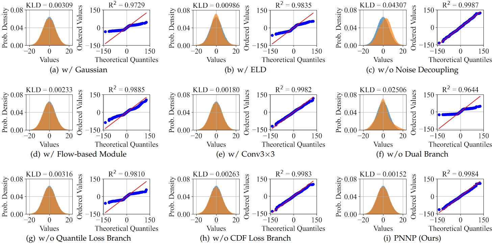

In recent years, the mainstream practice for training low-light raw image denoising methods has shifted towards employing synthetic data. Noise modeling, which focuses on characterizing the noise distribution of real-world sensors, profoundly influences the effectiveness and practicality of synthetic data. Currently, physics-based noise modeling struggles to characterize the entire real noise distribution, while learning-based noise modeling impractically depends on paired real data. In this paper, we propose a novel strategy: learning the noise model from dark frames instead of paired real data, to break down the data dependency. Based on the proposed strategy, we introduce an efficient physics-guided noise neural proxy (PNNP) to approximate the real-world sensor noise model. Specifically, we integrate physical priors into neural proxies and introduce three efficient techniques: physics-guided noise decoupling (PND), physics-guided proxy model (PPM), and differentiable distribution loss (DDL). PND decouples the dark frame into different components and handles different levels of noise in a flexible manner, which reduces the complexity of noise modeling. PPM incorporates physical priors to constrain the generated noise, which promotes the accuracy of noise modeling. DDL provides explicit and reliable supervision for noise distribution, which promotes the precision of noise modeling. The proposed PNNP exhibits powerful potential in characterizing the real noise distribution. Extensive experiments on public datasets demonstrate superior performance in practical low-light raw image denoising.
Comparison
Quantitative results (PSNR/SSIM) of different methods on the ELD dataset, SID dataset, and our LRID dataset. The red color indicates the best results and the blue color indicates the second-best results.
Our method achieves the most exact color and clearest textures in the majority of scenarios in public datasets. Benefiting from accurate noise neural proxies, the corresponding denoising results are exempt from obvious residual noise and effectively remove various complex noises including fixed-pattern noise.
Ablation Study
Ablation study of different modules we proposed on noise modeling and low-light raw image denoising. The underline indicates the best results.
A representative visual comparison of ablation studies on the ELD dataset. The red color indicates the best results and the blue color indicates the second-best results. (Best viewed with zoom-in)
A distribution comparison of ablation studies on pixel-wise noise at ISO-1600. Each subfigure consists of two parts: the left part shows a comparison of the probability density functions, while the right part shows the probability plot. The blue histogram represents the distribution of real pixel-wise noise, while the orange histogram represents the distribution of synthetic noise. The red line represents the quantiles of the real noise distribution, and the blue points represent the quantiles of the synthetic noise distribution.
Integration of Paired Real Data and Noise Modeling
Comparison of denoising performance among noise modeling methods trained with and without paired real data.
Data for Noise Modeling
One important premise often overlooked in noise modeling research is that real data is always essential in practical noise modeling.
Learning-based approaches depend on real data to train noise models, while physics-based methods utilize real data for calibrating noise parameters. Although noise modeling methods are generally applicable, the model parameters exhibit sensor-specific characteristics. Hence, a robust and practical noise modeling approach should address the inherent challenges associated with real data quality.
The quality of real data directly influences the quality of the resulting noise model. The overlook for data is particularly severe in learning-based noise modeling methods.
The existing strategy of learning-based noise modeling, which involves learning the clean-to-noise mapping from paired real data, has several problems from a data perspective.
This strategy heavily depends on large-scale high-quality paired real data, which is often challenging to obtain.
On one side, underdeveloped data acquisition protocol often results in signal misalignment within the paired real data.
On the other side, the coupling of excessive noise models within the paired real data makes it challenging for neural networks to accurately approximate the real-world sensor noise model.
In summary, data defects hinder the performance of the existing learning-based noise modeling strategy in practical low-light scenarios.
Compared to learning-based noise modeling, physics-based noise modeling relies on real data collected by cameras specifically for calibration purposes, such as flat-field frames for calibrating signal-dependent noise and dark frames for calibrating signal-independent noise. The calibration process is independent of paired real data, eliminating signal misalignment. From the perspective of data dependency, the data required for physics-based noise modeling is easier to obtain and of higher quality compared to learning-based noise modeling.
Based on these insights, we propose the strategy of learning the noise model from dark frames instead of paired real data. The data-centric perspective~\cite{data-centric} serves as the foundational principle guiding our analysis and problem-solving approach.